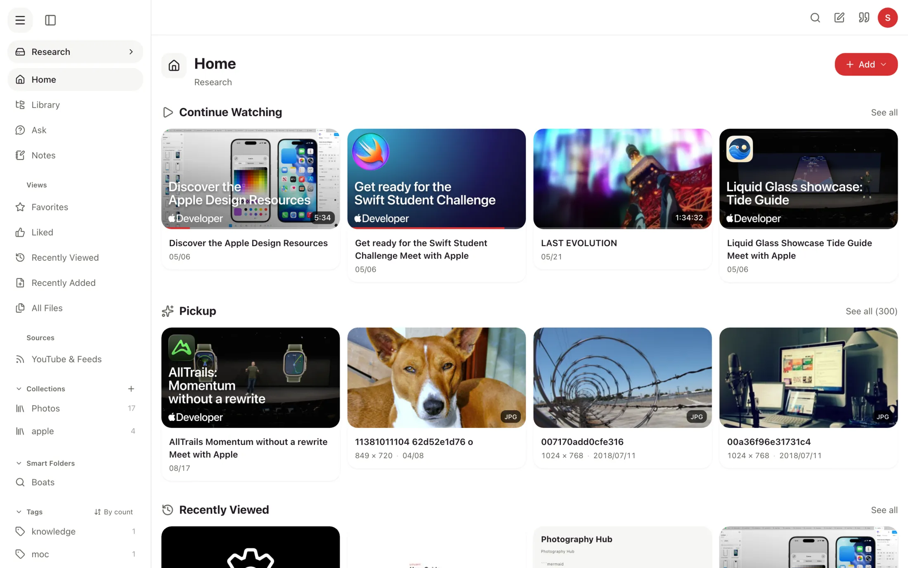
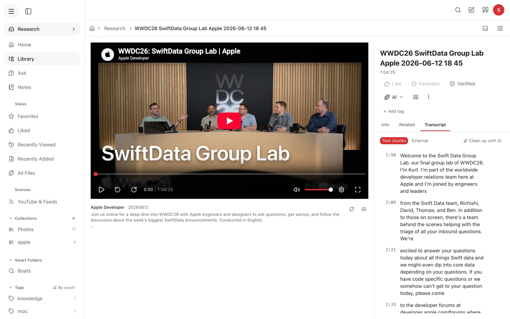
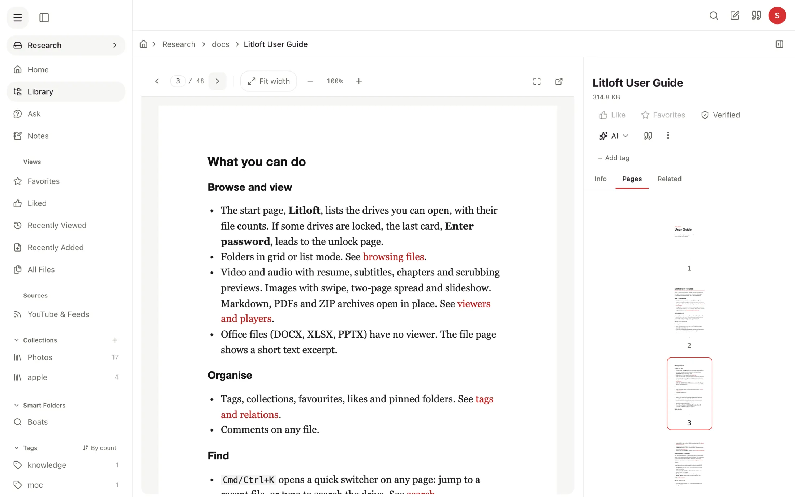
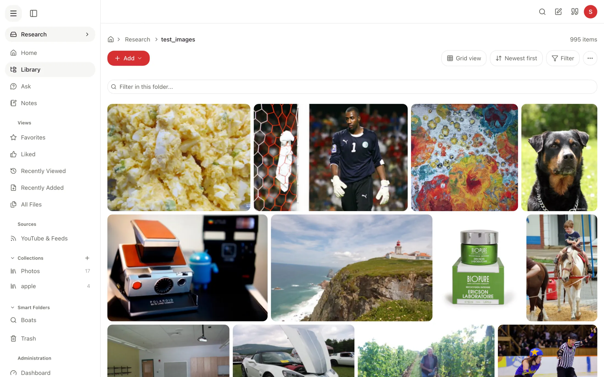
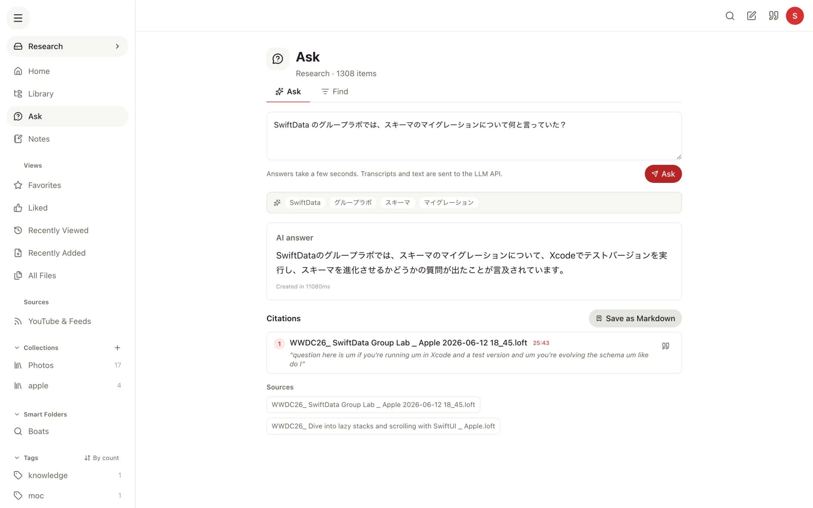
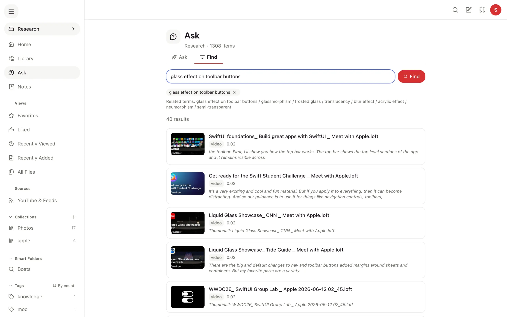
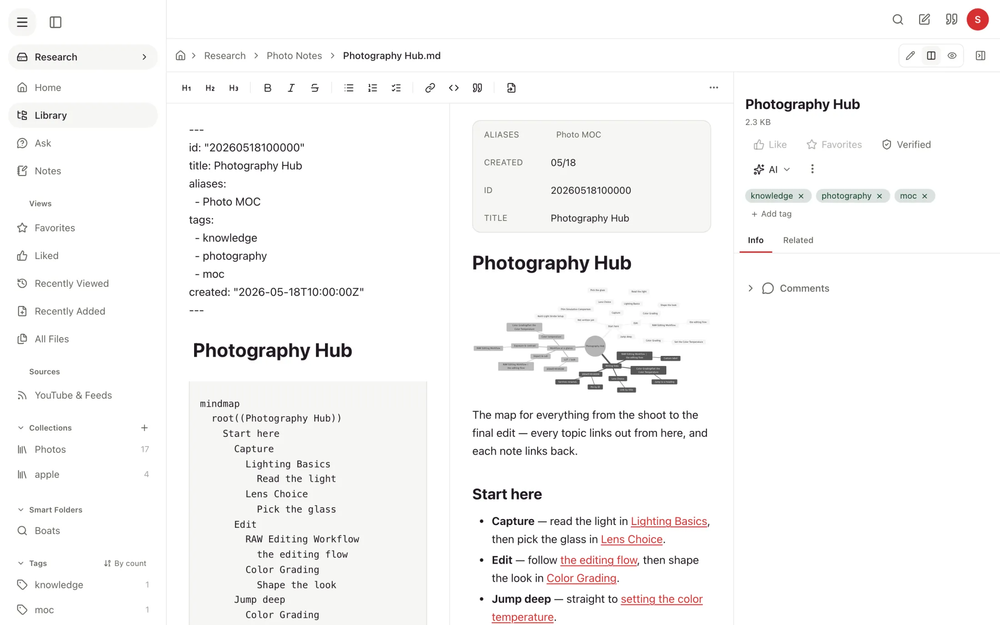
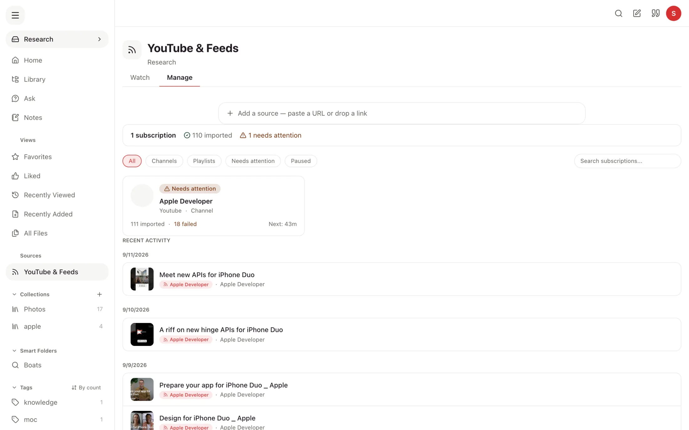
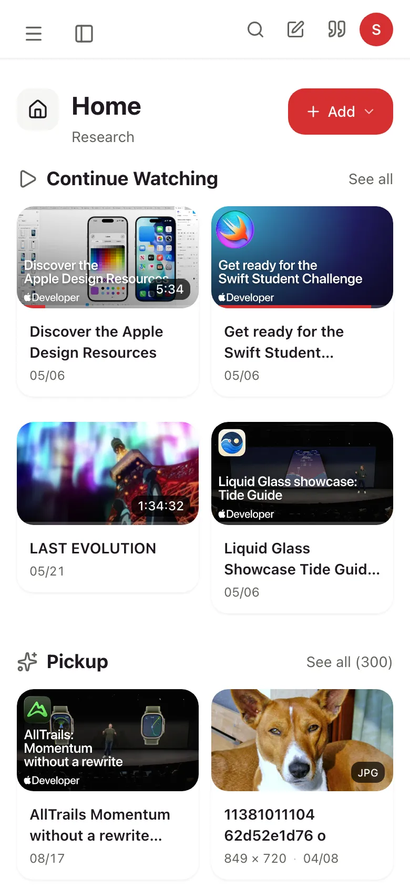
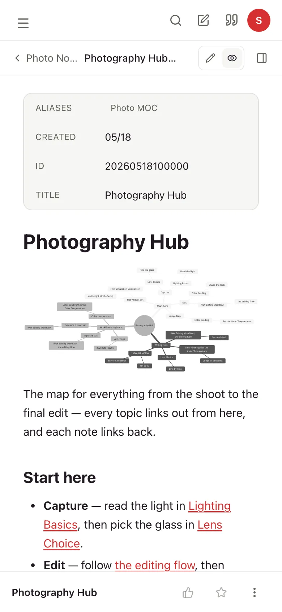

Home and Library, separated
Home gathers what to open next: Continue Watching, Pickup, Recently Viewed, Recently Added, Favorites and Liked. Library shows only the folder hierarchy.
Litloft is a self-hosted library for the videos, audio, PDFs, images and Markdown notes on your home network. Watch and read them in a browser, search inside transcripts and documents, and keep your notes next to the files they are about.
Docker ComposeHome LAN onlyLLM optional, local recommendedAGPL-3.0

This release reorganises how you move around Litloft and adds the viewers and note tools that were missing. The highlights:
Home gathers what to open next: Continue Watching, Pickup, Recently Viewed, Recently Added, Favorites and Liked. Library shows only the folder hierarchy.
Video, audio, PDF, image, archive and Markdown share one layout: the file on the left, and an inspector on the right with Info and Related, plus Transcript or Pages where they apply.
PDFs open in the reading direction they declare, turn pages full screen, and a search hit opens the exact page it matched.
Photo folders are packed into rows at each picture's own shape instead of cropped tiles. The image and archive viewers zoom by pinch, wheel or keys, and pan.
The Markdown editor styles text as you type, has a split view, and keeps saved versions with a diff of each. Restoring an old version can itself be undone.
Collect a search snippet, a video timestamp, a PDF page or an Ask citation, then save them into a note with links back to the exact moment or page.
The quick switcher lists name matches right away. With the Intelligence addon, results by meaning follow a moment later, so jumping to a file never waits on a model.
Web clips and other files an addon brings in arrive unverified. They show up in search, but Ask answers only from files you have verified.
An iOS app you build from source keeps audio playing in the background and moves video to picture-in-picture. An MCP server lets an MCP client work with the library under your access rules.
Point Litloft at a folder and open it from a phone, tablet or computer on your LAN. Videos resume where you stopped, and the chapters and transcript sit beside the player, every line with its timestamp.
.loft files that play embedded
Documents open on the same page layout as video. The Pages tab shows a PDF as thumbnails, and full screen turns it into a page-turner. Photo folders lay out at their real proportions.


Find searches names, tags, transcripts, document text and what pictures show, all at once. Ask passes the matching passages to an LLM and returns an answer with numbered citations, each pointing at the file and the second it came from.
Ask and summaries send passages to whichever LLM you configure. Point it at a local model such as Ollama to keep everything on your machine. Search and transcription work without an LLM.


Notes are ordinary Markdown files in your drive folders, so Obsidian or any other editor can open them too. In Litloft a note links to other notes with [[wiki links]], and to the videos and documents it cites.

Paste a YouTube or Vimeo URL, or subscribe to a channel or playlist. Litloft saves the title, thumbnail and any captions, and the video plays embedded from its source. The captions then join search and Ask like any local file.

Every screen has a phone layout. Add Litloft to the home screen to open it in its own window, or build the iOS app to keep audio playing with the screen locked and send video to picture-in-picture.


Litloft reads your folders where they are and keeps what it learns about them in a SQLite database on your machine.
.md files; imported videos are small .loft filessqlite-vecBrowser ──▶ :3000 Next.js ──/api/*──▶ :8000 FastAPI + SQLite + ffmpeg
├─ intelligence search, Ask, transcripts (own container)
├─ knowledge notes, clips, versions (own container)
├─ media_import YouTube & feeds (in the backend)
└─ cloud-sync rclone backups (in the backend)
The core is a file browser and player. Each addon is its own repository, and each drive decides which ones it uses.
Transcripts, search by meaning, scene and image search, Ask with citations, summaries, tag suggestions and chapter candidates. LLM features use Ollama or any OpenAI-compatible endpoint.
The Markdown editor with live preview, version history, the Notes page, web clipping, the capture basket and the connections graph.
YouTube and Vimeo URLs as .loft files, channel and playlist subscriptions, caption import and an import log.
Scheduled backups of your drives through rclone, to S3, Backblaze B2, Google Drive and the other providers rclone supports.
A native shell around the web app, built from ios/ in Xcode. Background audio with lock-screen controls, picture-in-picture video and AirPlay. Not on the App Store.
Lets an MCP client such as Claude Desktop search, read, tag, rename and edit files through Litloft's own API, with the same drive access rules as the browser.
You need Git, Docker with Compose v2, Python 3, and about 5 GB of disk. Everything else runs inside the containers.
The addons are Git submodules, so clone them along with the core.
configure.pyA short script that writes only what Docker needs to start. Press Enter to accept each default.
LLM_API_KEY, which you leave blank for a local model.It writes docker-compose.override.yml and .env, and asks before overwriting anything.
configure.py offers to start Litloft when it finishes. The first build takes several minutes.
Open the address configure.py printed, such as http://localhost:3000/setup?token=…. The wizard names your drives, sets passwords and access groups, and chooses which addons each drive uses. All of it can be changed later at /admin/settings.
Summaries, tag suggestions, chapter candidates and Ask need an LLM. Search and transcription work without one. You choose the provider and model in the browser after setup.
For a local model, install Ollama on the host and pull a model, and your files stay on your machine. Litloft also works with any OpenAI-compatible API, with the key in .env; file text is then sent to that API when indexing and asking.
The installation guide has the details, including HTTPS for iPhone and iPad.
A personal project, built first for one household's library. Issues and pull requests are welcome; support is best effort.
It is not meant for the public internet. Authentication is minimal by design, so use it on your LAN or through a VPN.
It has no user accounts. A profile is a nickname you pick in the browser.
It does not replace Plex. It neither transcodes video nor fetches metadata from online databases.
It does not work offline. Without a connection to the server, the browser and the app show nothing.
Free and open source under AGPL-3.0. Clone it, point it at a folder, and open it in a browser.